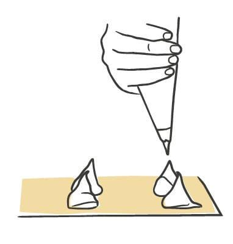
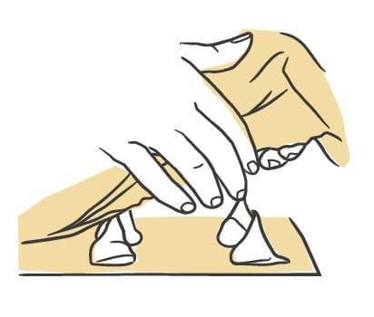
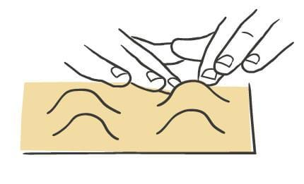
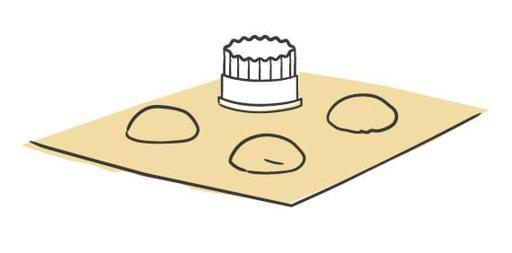
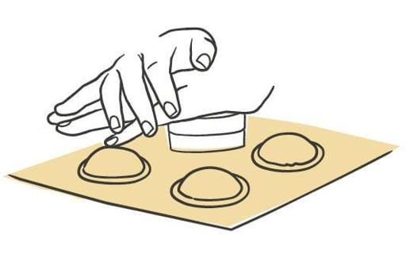
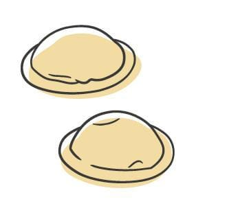

Pasta / Shapes
Occhi
- Dough
- Egg Dough
- Rest
- 45 minutes to 1 hour uncovered in the refrigerator
- Source
- Pasta, Missy Robbins
- Formed
- stuffed
- Region
- New York City. The author's own shape, with no confirmed Italian original
Shaping






Method
- Make your chosen egg-based dough, then roll and sheet it.
- Dust a wooden board with 00 flour. Cover a sheet pan with parchment, then dust the parchment with semolina.
- Trim the sheets to 18-inch lengths with a knife and cut away the ragged edges. Save the scraps for soup. Keep the sheets under plastic wrap or a towel.
- Lay one sheet on the board. Using a pastry bag cut to a 1-inch opening, pipe mounds of filling roughly 1 1/2 inches across and 1/2 inch high in an even run down the sheet, leaving about 1 1/2 inches between mounds.
- If the dough feels dry rather than moderately tacky, mist it with a spray bottle held 8 to 10 inches above the board so the second sheet will stick. Skip this if the dough is already tacky.
- Lay a second sheet gently over the first, edges lined up and no wrinkles.
- Press around each mound with your two index fingers to push out the air pockets. For insurance, flip a #30 (1 1/8-inch) plain round cutter to its dull side and press over each mound again to expel the last of the air and even up the circle.
- Cut each piece with a #40 (1 1/2-inch) plain round cutter, pressing straight down with your palm flat on top of the cutter, then twisting the cutter clockwise under that pressure to finish the cut. The sealed piece carries only a very small border.
- Lift the sheets from one end to peel away the surrounding scrap. Discard it or save it for soup.
- Set the pieces on the prepared pan in a single layer and dust the pan again with semolina.
- Repeat with the remaining sheets.
- Refrigerate uncovered for 45 minutes to 1 hour to dry. Covered pieces sweat and get too wet. To hold longer, lay plastic wrap loosely over the pan and refrigerate up to 8 hours.
Notes
- Two-sheet construction from 18-inch sheets, same as ravioli.
- Filling per piece: a mound 1 1/2 inches across and 1/2 inch high, piped through a 1-inch opening.
- Spacing: mounds sit 1 1/2 inches apart, tighter than the 2 inches used for ravioli.
- Cutters: a #30 (1 1/8-inch) plain round cutter used dull side down to expel air and round the mound, then a #40 (1 1/2-inch) plain round cutter to cut. The cutting diameter matches the mound width exactly, and the book notes the sealed piece carries only a very small border.
- Cutting technique: press down with a flat palm, then rotate clockwise under pressure to guarantee a clean full cut.
- Air is pressed out twice, first with two fingers and then with the dull cutter.
- Storage: 45 minutes to 1 hour uncovered to dry, then up to 8 hours refrigerated under loose plastic.
- Served at the author's restaurant with a sheep's milk ricotta filling and a butter, lemon zest, and bottarga sauce. Otherwise as versatile as ravioli.